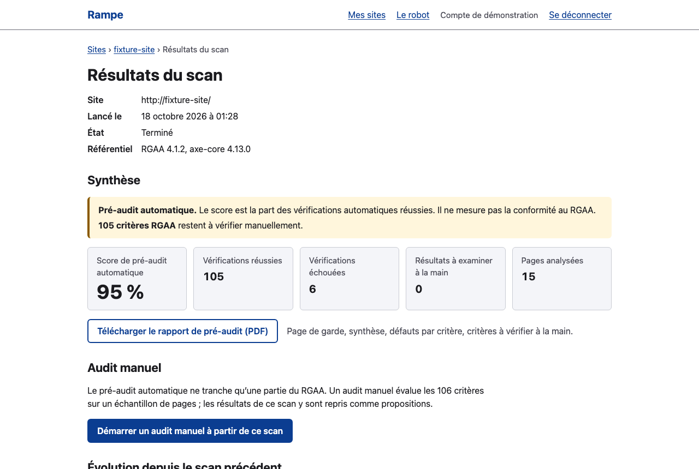

Ibrahim
Kakaev
Security-focused full-stack developer · Angular, Spring Boot, Node.js
Application security in practice: NetWatch IDS, a real-time network intrusion detector, thirteen pentest and CTF reports, and Root-Me challenges.
I am looking for a 6-month end-of-studies internship (second-year Master's in Software Engineering) in Toulouse or Albi, starting January 2027. Internship agreement provided by Avignon Université. Based in Albi.
Projects
-
2026
CERISoNet, full-stack web application
Angular, Node.js, Express.js, Socket.IO, MongoDB, PostgreSQL, Docker
- Social network application with real-time communication over WebSockets: news feed, likes, comments, shares and a list of connected users.
- Two-database architecture: PostgreSQL for accounts, MongoDB for posts and sessions.
- Full launch with a single command using Docker Compose.
- 269 tests (API, security, real time), CodeQL and Lighthouse in CI.
-
2026
Sésame, AI-powered enterprise document search
Java 21, Spring Boot, Spring Security, PostgreSQL/pgvector, Angular, Docker
- An LLM answers questions about PDFs and cites its sources, without ever receiving a passage the user is not allowed to see: filtering by groups in the SQL query, before any call to the model.
- Isolation tests for every user-document pair on every route, leak tests on the request sent to the LLM, immediate revocation of access rights; documented threat model.
- JWT with rotation and replay detection, audit log; 24 out of 24 sources retrieved in the evaluation; CI with CodeQL and Trivy.
-
2026
NetWatch IDS, real-time network intrusion detection
Rust, Tokio, axum, Angular, SQLite
- Capture (libpcap) and detection engine in Rust: decoding of Ethernet, VLAN, IPv4/IPv6, TCP and UDP; detection of port scans, SYN floods and abnormal throughput over a sliding window, with bounded memory.
- Angular dashboard over WebSocket (live traffic map), SQLite history; Rust and Angular tests in CI.
-
2025
Penetration testing and cybersecurity
Kali Linux, Nmap, Metasploit, Burp Suite, SQLMap, VulnHub, TryHackMe, Root-Me
- Thirteen pentest and CTF reports following a complete methodology: reconnaissance, enumeration, exploitation, privilege escalation and remediation recommendations.
- Compromised VulnHub machines, TryHackMe modules and Root-Me challenges, carried out on legal training platforms.
-
2025
Other academic projects
- Yalta, three-player hexagonal chess C++, SFML
- Jakarta application Jakarta, EJB, JPA, Payara, PostgreSQL
- Big Data and document management Hadoop, Docker, Alfresco, Linux, XQuery
Experience
-
2024
Full-stack developer, 2-month internship
DSI Grand Albigeois (IT department), Albi. PHP, JavaScript, MySQL
- Web search interface developed for the town hall's reception secretaries; database design based on digitised documents.
-
2020 to 2024
Youth activity leader and team lead
Responsibility for a team in the field and supervision of groups of young people. CROUS, Grand Albigeois, Handiligue
2024–2026 · Temporary and restaurant jobs alongside my studies (logistics, retail)
Skills
- Proficient
- TypeScript, Angular, RxJS, Java, Spring Boot, Spring Security, Node.js, Express, Socket.IO/WebSocket, PostgreSQL, MongoDB, Docker, Git, GitHub Actions, testing (JUnit, Jest)
- Basics / projects
- Rust, Python, C++, React, Jakarta EE, pentest (Nmap, Burp Suite, Metasploit), RAG / LLM APIs
Education
From Albi to Avignon for the Master's, about 210 km as the crow flies, then back to Albi.
- 2019 to 2024, Albi. Baccalauréat at Lycée Lapérouse, then a Bachelor's degree (Licence) in Computer Science at INU Champollion. 2-month internship at DSI Grand Albigeois in 2024.
- Since 2024, Avignon Université. Master's degree in Computer Science, Software Engineering. The internship agreement is provided by the university.
- Today, Albi. I live in Albi again. Looking for a 6-month end-of-studies internship in Toulouse or Albi, starting January 2027.
-
2024 to present
Master's degree in Computer Science, Software Engineering
Avignon Université
-
2021 to 2024
Bachelor's degree (Licence) in Computer Science, Web Technology option
INU Champollion, Albi
-
2019 to 2021
Baccalauréat, Computer Science and English specialities
Lycée Lapérouse, Albi
Languages: French (native), Russian (fluent), English (B2). Interests: automation, weight training, hiking, music.
What I'm working on right now
Rampe
In progress, since October 2026
Automated web accessibility pre-audit, mapped to the criteria of RGAA 4.1.2, the French accessibility standard, for small and medium-sized businesses.
The problem and the target
A small business that wants to know where its website stands on accessibility often has neither the time nor the budget for a full audit. Rampe gives it a first assessment: the crawler goes through the site, runs the automatable tests (axe-core), maps each defect to the relevant RGAA criterion, explains the fix in plain French and tracks progress over time.
It is a pre-audit: an automated test never proves RGAA conformance and does not replace a manual audit. Rampe always states how many criteria remain to be checked by hand.
What Rampe does
- Polite crawling: follows robots.txt and the sitemap, one page per second at most.
- Tagged PDF report, readable by a screen reader.
- Scheduled scans, with an e-mail alert when a regression appears.
- Manual audit of the 106 criteria, with a conformance rate computed with the official method and a draft accessibility statement.
- Organisations, roles, invitations and data isolation between customers.

Technical highlights
- Crawler hardened against SSRF attacks. Chromium runs in a container with no network access; an egress proxy resolves the host name once and connects to the verified address, which defeats DNS rebinding; only public addresses are allowed.
- Customer isolation proven by a test. It reads every API route (OpenAPI) and checks that none leaks data from one organisation to another.
- Three levels of testing. About 500 unit tests, about 70 integration tests against real PostgreSQL and Valkey, 75 end-to-end tests; 100% coverage of the business rules.
- An accessible application itself. No axe violation on any page and a complete keyboard-only journey, checked in continuous integration.
- Web security. Server-side sessions, argon2id, CSRF protection, strict content security policy, rate limiting.
- Deployment. Docker Compose behind Caddy (automatic HTTPS), daily database backup, structured logs.
Method, status and next steps
Specification, a plan approved before any code, then 7 milestones (J0 to J6) with acceptance criteria, each merged after review with CI green. Every technical choice is recorded with its reason. Built with Claude Code, an AI coding agent, within this framework.
Second-year Master's project in Software Engineering (Avignon Université), started in October 2026. All 7 milestones are done and the demo is online. Next steps: interviews with small businesses to validate the need and the price, then a redesign of the interface.
Contact
An internship, a question about a project? Write to me, I reply quickly.